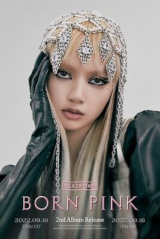
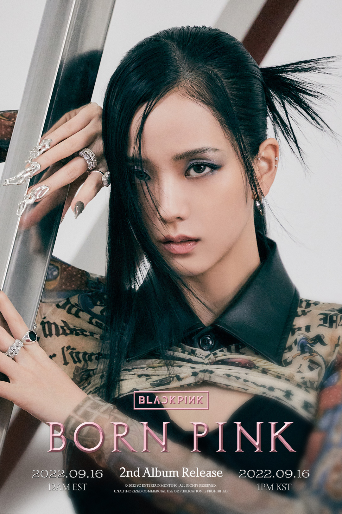

Kim Jennie (hangul: 김제니; hanja: 金珍妮; rr: Kim Jeni; MR: Kim Jeni, Gangnam, 16 de janeiro de 1996) é uma artista sul-coreana, integrante do grupo BLACKPINK. Em 2018, estreou como solista com o single "SOLO". Ampliou-se também para áreas de design e edição de moda, e é referenciada como uma principal fashionista e criadora de tendências. Em 2022, foi confirmada sua estreia como atriz.
Lalisa Manobal(em tailandês: ลลิษา มโนบาล; nascida Pranpriya Manobal (em tailandês: ปราณปรียา มโนบาล); Buri Ram, 27 de março de 1997), mais conhecida pelo nome artístico Lisa (hangul: 리사; rr: Lisa), é uma rapper, cantora, compositora e dançarina tailandesa. É popularmente conhecida por ser integrante do girl group sul-coreano Blackpink, tendo estreado nele em 2016 através da YG Entertainment. Lisa fez sua estreia solo com o single álbum Lalisa em setembro de 2021, que inclui o single de mesmo nome.
Kim Ji-soo (hangul: 김지수; hanja: 金智秀; Gunpo, 3 de janeiro de 1995), mais conhecida como Jisoo (hangul: 지수), é uma cantora e atriz sul-coreana, integrante do grupo feminino sul-coreano BLACKPINK, formado pela YG Entertainment. Em 2015 iniciou sua carreira na atuação, através de uma participação na série The Producers. Em 2021, estreou como protagonista na série Snowdrop, da JTBC.